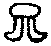

揞黑豆集卷七
六祖下第三十六世
南嶽高臺不退行勇禪師
古杭錢塘韓氏子。自幼好佛。至年二十有一。亟欲出塵。父母不許。遂夜遁至界山。禮靜主衍雲披削。偕全菴進公。參大覺老人於報恩。力究父母未生前話。因同眾普請。見僧荷空畚行。有省。一日侍覺次。覺問僧。轉山河大地歸自己則易轉自己歸山河大地則難如何會。師從旁徹法源底。時年二十有五。後猶脇不至席。朝夕參請。日臻元奧。覺謂師。得地之後。廢寢忘餐者。吾所僅見屢命分座。師力辭。結茆大雄山之雲覆菴。丙戌冬。覺北游。師於報恩。綱維首眾。三歷寒暑。為人懇切。接機迅利。遐邇欽慕。戊子春。覺自荊山寄伽黎法偈。與重豐峰三人同時記莂。春季。覺南回。結夏大雄。至冬過報恩。特命師立僧秉拂。己丑春。覺退居大雄崇福。師應請住吳興法海。辛卯秋。涉廬登衡。衲子向風而往。請開法於衡之天臺 僧問。如何是鐵蛇鑽入金剛眼。師云。墨池裏龍眠。如何是崑崙騎象鷺鷥牽。師云。海上犀牛獨足立。如何是海底泥牛銜月走。師云。露柱懷胎。如何是巖前石虎抱兒眠。師云。平地起骨堆。師隨示一偈云。狗銜燈盞街前去。老鼠偷鹽咳[口*敕]歸。露柱堂前驚破夢。開門雪裏放烏龜。我此四句內。有一句有權有實。有照有用。能縱能奪。能殺能活。若簡得出。許汝買草鞋行脚。速道速道。僧擬議。師直打出 二僧作禮。師云。你兩箇都是參無位真人的。試道看。二僧無語。師云我昨日做箇夢。夢一箇日本國人到江西出盌的所在。請一尊磁器觀音。把箇金漆桶裝了。載到本國臨上岸。忽然纜繩斷。把船都打翻了。連觀音大士也不見了。乃隨聲推倒桌子。(觀音出現) 僧問。如何是學人鼻孔。師云。你無鼻孔。進云。尋常向甚處出氣。師掌云向你道無鼻孔又問甚處出氣 居士請開示。師云。曾見甚麼人來。士云。曾見大雄和尚來。師云。那裏相見。士云。齋堂相見。師拈棒直打出 師召一僧云。我不問你工夫。與我請一尊佛來。(代僧劈面掌云南無鈍置佛)僧請佛至。師接(縮手云。道不得即與你。待伊擬答。劈面擲)得吹兩吹。僧擬議。師便打 僧送茶至。師接得便掌。(何不回敬一拳)云某甲過在甚麼處。師豎起二指。(一案未銷又一案)僧擬議。師又掌 師凡見僧入便搊住問云。你有幾隻眼睛。(正好劈面掌)僧擬議。師便打出 僧問。泗洲大聖。為甚麼在揚州出現。師便打。進云。無師下手處。(好與打趁出)師又打。僧擬議師又打。僧禮拜云。更深漏盡。請師尊重。師以拄杖畫一畫云。道道僧以袖抹之。(五更鼓拿犯夜)師連棒打出 問如何是本來面目。師云。連我也不識。僧擬議。師便喝 問僧。背後。的是甚麼。(掌云且打面前底)僧云。那裏看他見。師云。無鬚鎻子兩頭搖。僧擬議。師便推出 僧參。師問那裏來。進云。下路。師云。下路不見你者僧。進云。請和尚高著眼。師云。何不禮拜。僧便作禮。(代云禮拜不辭。卻須道過)師云。喪我兒孫 師問監院。喚作竹篦則觸。不喚作竹篦則背。速道速道。院喝師亦喝。院又喝。師以竹篦畫一畫。院擬議。師連棒打出 問父母未生前。如何是學人本來面目。師云。三家村裏牛。只有一隻角 結制小參。問大開爐鞲。煅凡成聖。未離兜率。未出母胎。如何通信。師云。霜打芭蕉光碌禿。進云。已離兜率。已出母胎。又作麼生。師云。頭破作七分。師乃云。三間破屋通天眼。七尺烏藤抹太虗。要明臨濟三元旨。荊棘林中舞柘枝昨夜無位真人。倒騎三脚驢子。直上萬仞峰頭。欲與諸人通箇消息。驀卓拄杖下座 小參。師云。未離兜率。已降王宮。未出母胎。度人已畢。有瞥地的麼。乃說頌云。新羅國裏火灼。吳越石人燒脚。誌公拋却杖頭剪刀。打倒天台國清寺裏豐干住底牆壁。汾陽太子院裏。驀然聳出一隻匾嘴高郵野鴨。逢人便低頭云。師太師太。乃左右顧視云。會麼良久云。元沙去後無消息。紅白枝枝不著花 小參。師云。即心即佛。文殊著賊。非心非佛。普賢呌屈。不是心不是佛不是物。觀音菩薩摸著了一箇毛頭大結。十字街頭驀然撞著了大肚子彌勒。放下布袋呵呵大笑云。青天白日為甚麼著賊 入室小參。師問僧。雪峰輥毬。道吾舞笏。天龍豎指。魯祖面壁。還有優劣也無。僧云。師又作麼生。師以手斫口作呱呱聲眾罔措師云一聲羌笛離亭晚。君向瀟湘我向秦。又僧問。某甲與師。燒作兩堆灰。向那裏相見。師云。脚破草鞋穿 小參。師云。南泉道。昨夜三更失却牛。天明起來失却火。者老漢滿口道。祇道得八成。勇首座昨夜三文錢。買箇黑老婆。頭又匾。眼又大。欲與諸人相見。恐諸人笑我。乃作女人拜云大眾萬福 入室小參。師示偈云。無蹤跡處著思惟。極著思惟猛自疑。驀拶髑髏俱粉碎。鴉巢飛出鳳凰兒。復云。無蹤跡處莫錯過。白鼻崑崙當路坐。昨夜火燒四禪天。四聖六凡無處軃軃得過。髑髏缺半箇。等閒一掣掣得開三箇老婆對面坐 小參。老鴉嘴上挂油瓶。月落寒松著一驚。失口一聲連嘴落。逢人連呌兩三聲。且道呌箇甚麼驀喝一喝 小參。僧問實無眾生可度。和尚為甚麼有者許多。師拈棒云。你見箇甚麼。進云。實無眾生可度。為甚麼用打。師云。情知你作打會。乃云。頻呼小玉元無事。祇要檀郎認得聲。昔日世尊初生。一手指天。一手指地。云天上天下。惟我獨尊。此是世尊向威音那畔。拈起寶刀。瓜分天下。令人返本還源。無奈索訶世界。都是認奴作郎。喚鐘作甕。賴有韶陽老漢云。我當時若見。一棒打殺與狗子喫。貴圖天下太平。韶陽老漢。禁石女不生兒。勇上座據欵結案。通箇消息。令諸人一飽便休。眾佇立。師遂說偈云。甕裏烏龜變作鷄。啞子開門飛了去。爬起跌倒握得來。明明者是向誰說 師落堂云。眉與目相去甚近。為甚麼不見。莫非被鼻子礙了。眾無語。師云。莫道無生死。便出堂 開爐小參。銅頭鐵額諸禪客。肘後橫懸奪命符。尚有火爐吞不下。氷霜肝膽細磋磨。驀然南斗北翻身。赤縣神州火裏坐。擲拄杖召眾云看火。便下座 謝兩序小參。少林面壁。白玉琢成西子骨。雪庭肘墮。黃金鑄就伍員心。六耳不同謀。一華開五葉。驀喝一喝。高聲召新充兩序。下座 小參。師云。驀眼撒沙看不得。栗蓬刺口吞不得。連腮便掌擬議不得。劈脊便棒回互不得。[口*邪]。臨濟未是白拈賊。且道山僧具何眼目。卓拄杖云。有約不來過夜半。閒敲棋子落燈花 小參。師豎左拳云。奪人不奪境。豎右拳云。奪境不奪人。握左腕云。人境兩俱奪。握右腕云。人境俱不奪。汝等諸人性命。盡被拳頭一口吞却了也。若向者裏轉得身。吐得氣。鯨吞海水盡。露出珊瑚枝。若轉不得身。吐不得氣。卓拄杖云。來年更有新條在。惱亂春風卒未休 小參。舉古人云。山中何所有。嶺上多白雲。只可自怡悅。不堪持贈君。磬山師翁呵呵大笑云。白雲是誰家私物。以拂指空云。看看。師云。二大老書雲畫空。高臺即不然。山中何所有。惟有兩堆柴。分付與火頭。燒盡再安排。其中有一句不恰意。有人檢點得出。分付拄杖子。(上大人收拾起。爾小生。可知禮)僧出云。一片柴也無。師云。夢裏惺惺又僧云。用兩堆作甚麼。師云。韓獹逐塊又僧云。山窮水盡。安排箇甚麼。師云。凍殺餓殺。乃顧視左右下座 順治乙未春。師志厭紛雜。攜杖別峰。掩關一室。屏絕給侍。效西峰死關遺意。至五月六日。師示疾。初八酉刻。召侍僧豎一指示之。侍僧曰。不會。師復豎二指。瞠目視之。侍僧罔措。乃跪求遺偈。師接紙云。信手拈來。一筆寫盡。都盧丟在大江東。連畫數圓相[(○*○*○)/(○*○*○)]擲去。乃自起趺坐。以兩手拭面。泊然而逝。師生於明萬歷丁巳九月十九日。示寂於清順治十二年乙未正月初八。春秋三十有九。僧臘一十有七。明年。弟子超真等。迎骨歸。建塔於江陰敔山祖席之中灣。峰公為之銘。
湖州武康縣報恩寺美發行湻禪師
福建延平府將樂縣人。俗姓熊。十四而孤。十八婚娶。生一子。年二十。妻子相繼而歿。畏身世無恒。決出家之志。投舅氏惺如公剃落。首參壽昌閴然謐禪師。閴即以大器期之。一日見古德垂示云。一口氣不來。向甚麼處去。疑情頓發。不覺放聲痛哭。乃奮臂揚言云。一切是非莫管。直趨無上菩提。師亦不知李都尉有是語也。浪杖人繼席壽昌。遂納具。自此工夫尤加精進。冬夏惟一衲一苧布單衣祁寒之際。編草裹腹。絕不以淡泊攖懷癸未冬。過博山入堂。遂誓云。大事不明。不出此堂。工夫逼拶。至四十餘日。如老鼠入牛角相似。忽被面前堂磬一觸。全身如在網羅中跳出。年方二十有七。遍歷閩中江右叢席。俱信宿少留。迤邐至金陵。邂逅與然緯公。時大覺老人道望高海內。即日腰包同往。值老人行脚歸大雄。師乞單入堂。老人懸牌垂問云。佛未出世道將一句來。有同堂僧某。以叢林頭角自許。謂師曰。我與兄語。當面呈之。師即抱牌入方丈云。和盤托出老人云。山僧今日困。師禮拜過一邊立。某僧云。蒼天蒼天。老人云。客作漢。直打出。復顧謂師云。汝這一轉語。可作我維那。次日結夏。即命師綱維首眾。夏中受老人拳踢最多。每謂人曰。若不克意來參老人。焉知有與麼事。所謂悟了不見人。十箇有五雙杜撰也。至七月解夏。與[卄/卬]溪森公等九人。同受記莂。處師為第二座。自此執侍左右。未嘗少間。老人日以趙州勘婆。白雲入磨房勘五祖話。問師凡下語。老人輙詬罵不已。一日復舉問師曰。既是拈也拈得。頌也頌得。悟也有悟處。因甚却道未在。師云。粉牌不著白。老人云。說也說得是。見也見得到。祇是未在。師參究累日。忽見白雲五祖面目。遂舉似大覺老人。曰這回謾某甲不得也。覺云。更與你三箇未在。師云。恩大難酬。便禮拜而出。次日侍老人喫粥次。老人曰。會得末後句底喫鐵棒有分。師云。這老漢脚跟未點地在。老人云。果然少不得。師云。且喜老漢。脚跟點地。覺云。轉見不堪。師便禮拜。覺云。粥後來領棒。師云。劒去久矣。乙未冬。游臺山。掩關紫柏洞。三閱寒暑。戊戌。重歸報恩。一日覺謂師曰。臺山婆子為汝勘破了也。這裏合下得甚麼語。師云。作家宗師。宛爾不同。覺云。那裏是趙州勘破婆子處。師云。明破即不堪。師復呈勘婆頌云。蒭犬吠明全不露。木雞子夜正明歌。一曲兩曲無人會。雨過夜塘秋水多。覺撫几稱善。辛丑春。師乞假入閩葬親。度夏蚌坑。於經行次。勿憶百丈囑溈山。時節若至其理自彰之語。驀然打失布袋。始信大慧禪師云大悟十八遍。小悟不記其數。非欺人語時年四十五矣。後出嶺舉似老人。老人云。茲與我江上水關契證處合。所謂不住始覺。冥合本覺。參得涅槃堂裏禪。未能透徹此關。自利即得。為人則禍生。今時佛法虀腐極矣。能透此關。是不易得。法道重任在子。厚自愛。遍謂入室弟子曰。還西堂得中禪狀元。汝輩落渠後也。師愈自韜晦。康熙乙巳夏。侍老人入天目。重開師子正宗禪寺。老人舉師立僧。示眾云。旁知曲解豈堪論。一悟為休眼正昏。不負南詢趙州老。無賓主句撼乾坤。要知無賓主句麼。問取堂中湻首座。丁未秋。奉老人命。受息齋金太傅岵瞻戴京兆請。住武康報恩法席 入院上堂。緗水龍淵浮玉山。廿年冰雪侍師顏。無端推出成狼藉。滿面慚惶何處安。行湻雖親依老漢二十餘年。並不參老漢禪。亦不曾得老漢說話。祇是被老漢罵得徹骨徹髓。身心頑了。一味瞌睡。佛法總未夢見。記得幾則古人因緣在肚皮裏安排。今日寶華王座上。闡揚佛祖宗猷。開煥人天正眼。不意來到野貓洞口。打一箇噴嚏。都忘却了。一字也想不起來。祇見金輪峻峭。萬木森嚴。山青水碧。鵲噪蟲吟。秋風颯颯。秋雨蕭蕭。緇是緇。素是素。鐘是鐘聲。鼓是鼓響。一一現成。一一明妙。一一為諸兄發向上機。一一為諸兄轉大法輪。一一從自己胸襟流出。所謂我本無心有所希求。今此無盡寶藏。自然而至。大眾。前是山門佛殿。後是方丈寢室。左是齋堂。右是禪堂。且道無盡寶藏在甚麼處。(若無此語。幾不成話)驀卓拄杖下座示眾。舉石門一喝分賓主。師云。醜舉止。照用一時行。師云。轉見不堪。會得箇中意。日午打三更。師云。狗子尾巴書梵字。野狐窟宅梵王宮 冬至上堂。萬疊山含荊岫玉。宜黃人唱晉江曲。冰河發焰梵天紅。燕地冬生閩地竹。咄。是何物。驀豎拂子云。大眾。眾舉頭。擲下拂子云。鶻兒已過瑠球國。便下座 示眾。春雲靄靄。春雨濛濛。開眼不見天地。合眼不見虗空。衲被蒙頭坐。憨憨瞌睡濃。通身黑漆漆。正眼自光通。三百六十骨節。節節現無量聖身。八萬四千毛孔。孔孔出金聲玉振。雖然。猶是無風帀帀之波。且道如何是出格一句。雨散雲收後崔嵬數十峰(可憐一句合頭語。留為萬口繫驢橛) 晚參。古佛心。千萬世。只如今。祖師意。鍼眼魚。吞鼈鼻。墻壁瓦礫放光明。演說如來真妙諦。驀拈拄杖。卓一卓。召大眾云。現在買賣。不離行市 晚參。對一說。日可冷。月可熱。倒一說。桃花紅。李花白。雲門不善諸佛機。惹得旁人說是非。且作麼生是諸佛機。破蓑衣。
蘊荊行璧禪師
楚人。參大覺於崇福。真切體究。未嘗輕發躁露。後坐精進三。次日上方丈。謂覺曰。某有箇見處。覺曰。狗子因甚無佛性。師拳覺肋下云。一向在趙州處落節。今日要和尚處拔本。(卻不道已是折本了也)覺便推出。次日復上方丈。覺云。盡大地火發。得何三昧。不被燒却。師曰。特來度夏。覺便喝。師呈偈云。圓似滿月圓。寬同太虗寬。歷劫無姓字。從來絕躋攀。聖凡由此出。剎海任伊安。始終無變異。觸處善隨緣。覺云。還會適來一喝麼。師便出。師土木形骸。悟處頴脫。後竟不知所終。蓋西山之流亞歟。
武康報恩寺骨巖行峰禪師
烏程溫氏子。幼業儒。尤信佛乘。年二十一。投舅氏陽山授和尚薙髮。授示寂。奉遺命參報恩大覺老人。一日聞覺示眾云。但向父母未生前薦取。自然廣大圓滿。師於言下有省。是冬覺過宜興海會。不退勇公在堂綱維。一眾賴以提策退一日問師。本來面目。還喫飯麼。師曰。那一件不是箇中事。退劈面便掌。師曰。師兄又作麼生。退復掌云還你飽齁齁地。師從此頓開生面。密舉五宗綱要。一千七百公案。毫無疑慮。乃舉似退。退曰。大修行人還落因果也無。師云。不落因果。退曰。恁麼則墮野狐身也。師云。賴遇是某甲。退喜見顏色。令師趨海會。以所得呈覺。覺詳悉勘驗。乃書一偈云。自慚福德真輕薄。十載追隨有數人。近日傳來消息好。鼇山阻雪事如新。鼎革後。覺遠遊淮北。師腰包尋訪年餘。至鳳陽懷遠縣始遇。侍覺荊山之普陀菴度歲。一日覺問。如何是日中浩浩時昨得主。師云。真不掩偽。覺曰。如何是夜間睡夢時作得主。師云。曲不藏直。覺曰。正睡著時。無夢無想。無見無聞。主人公在甚麼處。師連答數語。覺俱不肯。到此從前所得。都用不著。日日靠空棺材。如有氣死人。一日到老人前。老人又問。師云。家無二主。覺曰。一箇驢子繫在橛上。師即大豁所疑。急趨前。別前語云。時值天寒。請和尚保重。覺曰。此間難得禪和到。與你一盞茶。師云。看者老漢今日一場敗闕。覺曰。何不早恁麼道。師便禮拜 檀越請陞座。舉千巖長祖頌文殊問。維摩不二法門因緣云。鐵笛橫吹宇宙清。蝦蟇蚯蚓解翻身。知音不在千杯酒。一盞清茶也醉人。師呵呵大笑云。千巖老祖。美則美矣。若是如今。叢林澹泊。衲子饑餓。如斯言句。却不相當。今日雲間眾信入山供眾。山僧應時及節。重頌此案。舉似諸人。文殊多口維摩默。往古來今見不全。却喜雲間居士會。饅頭米飯飽鼾鼾。喝一喝。卓拄杖下座 康熙丁丑六月二十六日。遍至各寮。從容談笑。且誡曰。老僧不復來矣。宜自修省。毋恣空過。至次日酉刻。吉祥面壁而逝。世壽七十九。僧臘五十五。
湖州武康報恩寺棲雲行岳禪師
烏程沈氏子。世為望族。少補廩庠。始以居士身參大覺老人於報恩。順治乙酉。投覺披削。丁亥秋。事覺於淮北。乞食炊給之餘。覺力為錐劄。一日問覺。空索索地錦豔豔。錦豔豔地空索索時如何。覺云。待你到此境界與你道。師禮謝。覺云。者漢多時妄想。今日始斷。師有省。庚子春。侍覺應詔還山。入天台桐栢宮。草衣木食。習頭陀行者三閱寒暑。癸卯春。覺命繼席報恩 晚參。師云。彌勒真彌勒。起模畫樣。分身千百億。揑目生花。時時示時人。郎當不少。時人自不識。略較些子。召大眾云。還有讚歎分也無。將此深心奉塵剎。是則名為報佛恩 晚參。師云。入秋時節不相饒。西風吹雨池塘暮。古殿松陰宛轉開。鐘聲透過山前路。急回顧。是甚麼 解制後三日晚參。僧問。涅槃心易曉。差別智難明。如何是差別智。師云。春打六九頭。春雨灑不歇。進云。如何是涅槃心。師云。百花枝未動。今年信較遲。乃云。祖師心印。非長非短。能方能圓。無相無貌。有彩有文。天下衲僧廝結眉毛。結即印破。盡山河大地日月星辰人物草木。一破一切破。天下衲僧解開布袋。解即印住。盡山河大地日月星辰人物草木。一住一切住。或有箇漢出來憤憤悱悱道。說甚麼印破印住。和者印子一擊百雜碎。岳上座不免呵呵大笑。雙手作遞印子勢云。請試下手看(掌云。不奈船何。打破戽斗。蓮云。我當時若見。但鳴指三下出去) 落堂。師問東單眾云。西單無。為甚東單有。問西單眾云。東單有。為甚西單無。師呵呵大笑云。誰家別館池塘裏。一對鴛鴦畫不成 康熙丙午冬十月某日。示寂於報恩之西方丈。世壽五十三。僧臘二十二。塔於寺之養親草堂左隴。
報恩西堂寂菴行洽禪師
汝州光邑王氏子。孤苦絕塵。矢志萬行。到處陸沈眾中。尤行業純謹。後參大覺老人於報恩。覺示以未生前話。每徵詰。師無對。覺云。你恁麼參禪。水也消不得。師直得垂淚。同眾坐不臥七。覺問甚麼物。恁麼坐。師云。總沒交涉。覺便打。師無語覺痛打一頓。中夜釋然。舉似覺。覺頷之。時年二十有三。師因看病回。覺問有氣死人。是你救活了。無氣死人作麼生救。師指旁僧云。何不祇對和尚。覺云。他已喫我三十棒了。你自道。師云。和尚著甚死急。覺云。念汝看病辛苦。一日覺指楊梅問。一樣楊梅。因甚有紅有青。師云。和尚合取口。覺頷之。覺垂問。道通無礙。因甚一片竹窗關斷月。師云。和尚道甚麼。覺云。須是他喫得棒。覺問紫羅。帳裏撒珍珠。汝作麼生道。師云。拖泥帶水。覺云。向古廟裏軃得過時如何。師云。吹毛用了急須磨 師問僧。死了燒了。你向那裏去。僧云。一念不生無來去。師云。向一念未生前道。進云。吞却須彌了也。師云。你試吞者火爐看。僧無對。師便打。復顧旁僧云。你與他代一語看。進云。喚作火爐那。師便喝 師一日同不退勇廊下行次。退驀拈一毬擲師。師云。那裏得者箇來。退以毬便打。師大笑而去。至晚入退寮。於桌上畫云。午後底。午後底。復作此[中-口+○]相云。作麼生。作麼生。遂將毬子收過。退少間自外歸。亦書此云。賊賊把將來。令行者送至師寮。師將毬了付行者云。也是雪峯道底。退又書○相云。幾人於此茫然。師云。直饒恁麼。也只是弄泥團漢。雖然。若人檢點得出。直須○○○ 僧問。策杖理民時如何。師云。天下歸仁焉。進云。棒上成龍。又作麼生。師云終不貴僧問。如何是三世諸佛不知有。師云。燈籠露柱長年困。進云。如何是貍奴白牯却知有。師云。脫殻烏龜飛上天。
杭天目山全菴行進禪師
武林沈氏子。生數月而孤。至年十二。母命投無諍寺隱松禪師出家。後思求出世正因。往參天童密老和尚。遂進具。嗣往報恩參大覺。問某甲生死未明。求和尚開示。覺曰。將生死來與汝開示。師茫然。是冬遇林叟。指參金粟。有同參問曰。兄生緣何處。師云。瓶窑。參曰。到報恩多少。師曰。二十五里。參云。啐。你處現有古佛善知識不參。反來者裏。正如瞎貓跳過魚盤喫豆腐也。師唯唯。一日因往若山訪同戒。投林叟宿。林云。你去金粟住。又來何幹。師以前事實告。叟作色曰。我却瞎了眼。將謂你是箇有志氣底人。勸你去親近善知識。你今破期出堂。將來期期如此。他日誑騙人。我住若干叢林。參若干知識。者樣沒血氣底。枉相為你。師被呵。直得慚悚無地。遂回金粟滿期。明年三月。重至報恩。師後嘗曰。從此一住二十三年。實賴林叟激發之力。覺見師誠實。痛下鍼錐。師自恨障緣深厚。不能一撥便轉。或捐鉢資。或賣衣物。攢米打七。徹夜參求。不知其幾。至年三十八歲。時覺北行。不退勇公綱維。見師工夫得力。當眾稱賞。師七終不得透徹。放聲大哭。次早詣寮致謝。仍流淚不已。勇慰曰。和尚不在家。兄去親近理安和尚亦可。師曰。某在此親近和尚十來年。如此不青不黃。有何面目別去見人。者樁大事。必求吾兄為我了斷。某已辦得石米。欲上證果菴討箇分曉。乞兄早晚提誨。勇大喜。即送師上山。研究一七有餘。忽地春風大作。打開門戶。師當下猛省。喜躍無量。時勇往雲覆菴。師即星夜越嶺相見。勇云。全兄何得夜來。師云。某甲捉得賊。特來出首。勇云。為甚文殊出女子定不得。師云。莫謗文殊好。勇云。為甚罔明出得。師纔擬議。勇攙前云。喂。咍。師茫然無對。值覺回大雄。趨往瞻禮。一日覺垂語曰。古人道休去歇去。一念萬年去。寒灰枯木去。古廟香爐去。一條白練去。且道明甚麼邊事。師同眾下語。覺徵云。龍得水時添意氣。虎逢山勢長威獰。是汝道底。師云。今日親見和尚。又一日入室。覺問萬法如何歸一。師云。海納百川。覺云。一歸何處。師云。波生浪湧。覺曰脚跟下與你三十棒。師掩耳而出。自此投機。命充副寺。一日因禪者呈香巖上樹頌。觸著向問勇公此話。咬嚼不破。自謂此話不透。則從前發揮公案。皆未穩當。遂將拈頌稿一時焚却。辛亥。老人命師上天目。一夕諸兄弟同在老人室中。因舉上樹話。至虎頭問處。覺厲聲云甚麼虎頭上座。狗頭上座。師當下礙膺之物。豁然蕩盡。遂當眾頌上樹話。覺大可之。後出世住興化極樂院。既而遷荊溪海會寺。庚申仲夏。應請主持天目。辛未春復應請崇福 僧問。盡力道不得底句。誰是得者。師叉手云。慚愧。(別云。三千里外聽淆訛)僧云。得後何如。師云。兩粥一飯。(別云。胡餅裏呷汁)進云。忽遇出格人來。又如何相見。師云。打退鼓。(別云。三十棒)僧問。大死底人却活時如何。師云。只得一橛(別云。你活看)進云。不許夜行。投明須到時如何。師云。此夜一輪滿。清光何處無(別云。念言語漢)。
昭覺丈雪醉禪師
內江李氏子。襁褓時。禮古字山清然師為徒。性冲淡。於世邈然。(入道之根)因讀法華經。乃至一舉手。或復小低頭。皆以成佛道。默計曰。成佛與麼易耶。遂質本師。師罔措。圓具後。遍參諸方。至破山。問僧問雲門。如何是佛。門云乾屎橛。意旨如何。山作臥勢云。老僧不參禪。祇愛伸脚眠。師疑駭。動靜如一箇有氣死人相似。一夜因倒穿了鞵。脚套不上。擬伸手拔。忽然有省。參天童。一日上太白頂拖柴。因竹簽傷足。血迸汙地。忽聽梆鳴聲震山谷。忽然大悟進方丈作禮云。某甲有些暢快。密作聽不清勢。師便打噴嚏。密打云。那裏失利。來者裏拔本。師又兩喝。密連打云。翻不暢快了。師拂袖便出。復至蜀謁山。山問。你從南方走一回。帶得甚麼寶物來。師豎一拳。山曰。別我七八年。一點氣息也沒有。師曰。若有氣息則不歸了。山肯之。後住成都府雪居禪院 晚參。山僧一夏已來。妄談般若。生身墮拔舌犁耕地獄。正與麼時。阿誰隨侍。溪聲首座云。自作自受。師云。我識得你。復云。既是無人替得。冥應罪緣。毫髮不來。因甚三門廚庫。被蠛蠓蟲吞却。老僧於須臾頃。遊徧一十八重地獄。末後為眾兄弟。撥轉今昔關頭去也。拽杖打散歸方丈 上堂。物物有密語。直捷直到底。七佛祖師來。兩眸擡不起。林下人十中有九覷捕不及。時大憨維那一喝。師云。好人不肯做。又去屎裏臥 示眾云。靜明無隔夜禪與人參。復拈拂子云。而今有也。拂一拂云。到與麼也未 居士問。一口氣不來時。向甚麼處安身立命。師劈面一掌。士擬開口。師復掌。士請開示。師云。待汝一口氣不來向汝道。一日又問。一口氣不來。向甚麼處安身立命。師打一拂。士擬開口。師復打。士云。弟子不會。師云。賴汝不會。若會。黃河水也須倒流三千里。
百城著禪師
奉節縣沈氏子。三歲解準提解結二呪。其後博通五經。天文地理。諸般術數。十四遊泮。十六選拔。身羈功名。心嗜佛典。偶見破山禪師語錄偈云。我為生死來出家。何須更算海中沙。無常煞鬼卒然至。錦繡文章亂似蔴。遂棄官。禮大年師披剃。具足後。遇竹帆禪師。指參破山禪師。相依有年。總不得脫灑。一日山喚師答話。師纔作禮。山驀頭一踏。師豁然大悟。喝一喝。山云。再喝看。師拂袖歸堂。遂呈偈云。本地風光處處知。芒鞋筋斷絕纖疑。幾回踏破山頭月。帶露和煙憩隴西。山肯之。住順慶府渠縣興國寺 上堂。運水搬柴只自知。神通妙用總由伊。算來不費些兒力。何必三三兩兩疑。僧云。不疑底人來也。師云。須彌山王在那一劫中與你說破。僧沈吟。師便打(者僧未有喫棒分在) 上堂。劈不成兩。揑不成團。是箇甚麼。指足云。一隻草履爛却半邊。不得周全(適纔猶是好好底。隨後咄云。囈語作麼) 師因雪背師兄問。道得一句。是吾真弟。師打一掌。背休去。師云。不可向鬼窟裏作活計。背呵呵大笑。師云。也未見得 師入堂。埜湘驀抱云。正恁麼時如何。師打一掌。湘沈吟。師又打一掌。師圍爐。湘隨至。問云。畢竟如何。師拈火示之。湘後契悟。師云。你何不謝我。湘拈一粒豆置師碗中。師云。今日收得一主冷賬。
黃州黃陂素山冲然義禪師
於燕京西山。一僧戴雲尖帽。穿朱履。著跨鶴衣。拜曰。和尚還識得否。(但向伊呵呵道有趣有趣)師拈棒曰。不是儒。不是道。俗人頭戴僧官帽。連棒打趁。其僧渾身脫却。赤體問曰。和尚今又如何識我好。(更向伊呵呵云。也好也好)師亦打曰。脫却皮毛換却骨。難逃法眼破重迷。僧悲感禮謝而退。康熈壬戌春。師預期辭世。至二月十八午時。上堂訣眾。叉手而逝。塔建本山。
蔣山芥菴大禪師
小參。師云。捲簾除却障。閉戶成塞礙。祇者障與癡。古今無人會。無人會。三箇成羣。四箇逐隊。君不見臺山路上驀直婆。明州市裏憨布帒 曬藏上堂。釋迦老子四十九年。三百餘會。口勞舌沸。演出一大藏教。天人龍鬼神無不頂戴奉行。誰知落在我祖師門下。被人喚作拭瘡瘤底故紙。今朝六月六日。諸檀攀條攀例。來此翻曬。若也彼既無瘡。自勿傷之。其或未然。好將此故紙。拭淨你底瘡瘤。且那裏是你底瘡瘤。故紙又作麼生拭。你若生五戒十善底瘡瘤。將人天故紙來拭。你若生三途六趣底瘡瘤。將輪迴故紙來拭。你若生無明煩惱底瘡瘤。將真如解脫故紙拭。你若生四果四向底瘡瘤。將聲聞故紙拭。你若生六度萬行底瘡瘤。將菩薩故紙拭。你若生火宅底瘡瘤。將三車故紙拭。你若生安養底瘡瘤。將彌陀故紙拭。此猶是已驗之方。對症之藥。未出教乘極則。更有般蹊蹊蹺蹺。古古怪怪底瘡瘤。三種病。二種光。透之不脫。明之不得。惟我衲僧分上。為害為冤。所以道。燈心刺著石人脚。火速去請周醫博。路逢龐公相借問。六月日頭乾曬却。大眾。且道曬乾後又作麼生奉持。山僧為說陀羅尼而守護之。以兩手捻拳。連叩齒云。金吒金吒僧。金吒護金吒。吾今為汝解金吒。終不為汝結金吒。唵吽吽泮泮娑訶。下座 晚參云。乾坤之內。宇宙之間。中有一寶。秘在形山。大眾。如何是你形山底寶。一僧云。月色和雲白。松聲帶露寒。師云。我不答對。不吟詩。只要問你形山底寶。僧禮拜。師云。禮拜且置。雲門道。將山門來燈籠上。又作麼生會。僧擬議。師便喝。一僧拜云。深領和尚者一問。便出。師復喚來云。領後如何。僧云。密不通風。師打云。將謂是南番舶主。元來販私鹽漢 小參。秋風清。秋月明。梧桐葉已落。丹桂又香生。長空歷歷鴈過。高樹啾啾蟬鳴。說甚西來祖意。太煞十分現成。楊美之。郭君建。不依本分。錯路修行。來我興善寺裏。朝三暮四。念他白雲老子底上大人。乃呵呵大笑。歸方丈(楊美之。一大藏。郭君建。千七百。恁麼會得。愜芥菴意。未愜心圓意。且道心圓意作麼生喂咍) 晚參。入院以來一月。人事奔忙不徹。日日愁米愁柴。佛法無暇打疊。大眾一體人情。苦苦煎逼要說。大似欠他錢債。還本還利無歇。興善雖則臂長袖短。今晚不免盡情抖擻了罷。遂提起衣袖連抖數抖云。大眾。多得不如少得。少得不如現得。年窮歲畢。以後再不要上門上戶來索取 晚參。若起紛飛之心。即究紛飛之處。究之無處。則紛飛之念自除。返究究心。則能究之心安在。正恁麼時如何。抱石投江(惟人自肯乃方親)。
台州淨居湛菴常禪師
四明鄞邑吳氏子。依金粟悟得度。圓具。隨悟遷天童。因陶瓦乏人。命師執役五載。每求進堂。悟曰。此事不拘內外。貴在篤信。師即矢志不進堂。決於透徹。以作堂外榜樣。一夕閱悟語錄曰。何不向棒頭指處看。忽然知得棒頭落處。次早呈悟。印可之 示眾。一言不相赴。知君太罔措。即此罔措時。便是汝出路。擬向別處討。驢年不得了。年老覺心孤。誰知多落草。
明州雪竇宏遠詔禪師
族姓王。越之觀海衛世胄也。母一夕夢老人送和尚入室而誕師。總角脫白。參念佛是誰。依天童悟祖。力究不契。後謁石奇雲於靈鷲。看雲門東海鯉魚話有疑。一日侍雲次。值旁僧舉問此話。雲便打。僧又問。雲又打。僧再問。雲復打。師見之。忽然大悟。乃曰可惜許。三棒也無一點。雲曰。你又作麼生。師拂袖曰。大雨來也。便出(妙悟)。
蘇州西華秀峰岫雲行瑋禪師
長洲顧氏子。年十二。投虎邱西隱房本如披剃。閩漳黃石齋太史寓西隱。師出謁。應對不落機。復命為詩。叉手而就。史異之曰。此沙彌。他日肇興祖庭無疑也。二十五。從牧雲門謁天童悟。命隨眾滌食器。每進方丈參咨。屢遭痛棒。門呼之曰。爾滌食器多時。摸著碗底否。師大疑。猛力參究。忽一夕捲簾頓豁。亟趨見悟。悟曰。作麼。便展拜曰。謝和尚不通一線之恩。悟微笑而頷之。越三年。隨門出天童。居吳之銅井山。及門開法古南。命為第一座。一夕晚參。門曰。心生大歡喜。自知當作。只是下面一字。山僧續不來。請大眾續看。師出眾曰。賊。門可之。
南嶽法輪石隱貞禪師
江西武寧劉氏子 上堂。法輪貞長老。恰似打油匠。不管菜子桐子山茶子。一齊收拾榨牀上。冷也一撞。熱也一撞。撞得一點氣息也無。翻轉枯來。還要加上兩撞。且道為甚如此。良久。顧眾曰。是則名為報佛恩(明眼宗師。須具此毒辣鉗錘)。
如如懶人方為戒居士
歙州人。齠年即有志向道。一夕夢輻巾道者。引至揚州三叉河寶塔下。視塔影欹斜。命士將塔扶正。士開塔門著力。通身汗下。忽然有省。覺身心世界一空。盡古今只是一箇自己。并自己亦不可名狀。述偈曰。夢中作夢宛然真。耳聽何如眼聽親。泡影堆中拈寶具。大千活句屬吾人。自此遣妾茹素。求道益切。一日謁牧雲門於鶴林。門曰。不生不滅心聻。士曰。弟子今早渡江。門曰。江上風浪惡。如何過得。士曰。柁柄在弟子手裏。門曰。即今登岸也。柁柄聻。(何不便掌)士曰。本寺伽藍米公做。門曰。米公與你有甚涉。士拱揖曰。即刻拜別和尚。門笑而頷之。曰梅子熟矣。乃付以偈曰。靈山花下別。京口渡頭逢。君今如是去。千載起吾宗。後求剃度。門曰。可搆靜室。不必出家。便化同人。堪稱希有。
潤州夾山蘧夫一禪師
宜章李氏子。年十八。投萬松出家。初謁憨山清於曹溪。卓萬法歸一語。三年不會。次扣天童悟。棒下有省。後見夾山豫。豫問甚處來。師曰。浙中。豫豎起拂子曰。還收得這箇麼。師曰。阿誰不具。豫曰。試呈似老僧看。師拂袖便出。
杭州錢塘理安天笠珍禪師
雲間陳氏子。父仲雍。母金氏。十八出家行脚。參南澗。澗示父母未生前話。疑不去心。圓具後。徧謁知識。過紹興東郭門外。逢殺犯人。血濺衲衣。打失本參。偈曰。活人頭落地。血濺死人衣。不知誰死活。斬斷未生疑。呈南澗。未獲許可。後依南澗過竹林。因僧錯會趙州勘破婆子話南痛棒打出。復喚回來云。與你說箇譬喻。你即是者僧。老僧即是趙州。拈起竹篦云。者便是婆子。那裏是勘破處。(眉毛拖地)僧擬議。南擲竹篦歸方丈。師在旁不覺汗下。洞徹古今公案。師呈頌云。幾人不戰便成功。(五字足足)獨許南陽老臥龍。(何處見他)自借東風鏖赤壁。(是非蜂起邪法難扶)賺他血淚滿江紅。(認奴作郎如麻似粟)南云。那裏是趙州勘破婆子處。師震威一喝。南便打。師禮拜云。勘破了也。便出。後繼席南澗 上堂。抱鈯斧居山。聞名不如見面。著草鞋住院。見面不若聞名。事到如今。抑不獲已。颺下鈯斧子。脫却破草鞋。展開驢脚。伸出佛手。菩提路上。扶起剎竿。廣濟道中。重開飯店。不蓄一粒米。不栽一莖菜。令一箇箇飽齁齁地。拈却炙脂帽。卸却鶻臭衫。作赤灑灑淨倮倮漢。若是具頂門眼。懸肘後符。呼喚不回頭。羅籠不肯住。望剎竿而走。見鞭影而行。山僧不妨瞻之仰之。即今還有恁麼人麼。驀卓拄杖云。設有。勘過了打 上堂。大通智勝佛。稽首乾矢橛。十劫坐道場。猴子繫枯樁。佛法不現前。心肝樹上懸。不得成佛道。泥神撫掌笑。此四句中。一句殺人刀。一句活人劒。一句殺活同時。一句殺活不同時。若撿得出。古佛在你脚底 晚參。大人峯頂無根樹。却被賊子偷了去。幾多癡漢守枯樁。業識茫茫無本據。以拄杖一齊趁退。
黃梅五祖千仞岡禪師
明州王氏子。弱冠。禮雪嶠信斷髮。受具天童。看無字有省。偈曰。狗子無佛性。莫道說得好。閨女學做媒。自身也難保。後往夾山見箬菴問。舉高峯枕子因緣。言下大徹。呈頌曰。久憶并州是故鄉。而今身已到咸陽。若教忘却來時路。不是愁人也斷腸。問擊節稱賞。命師分座。出世潤之金山。鄂之黃龍。舒之浮度。陞座。春色闌珊三月天。數聲啼鳥落花前。荷因有熱先擎蓋。柳為無寒漸脫綿。處處勸耕梅子熟。家家繰繭竹籬煙。分明好箇神仙訣。父子雖親不可傳 僧問。牛頭未見四祖時如何。師云。花開蝶滿枝。曰見後如何。師云。樹倒猢猻散 黃梅祖殿拈香。鉢衣漫與俗家兒。骨董渾身欲付誰。看取東山山上水。承恩端在逆流時 陞座。鴉鳴鴉鴉。鵲噪鵲鵲。婆餅鳴婆餅。姑惡鳴姑惡。記取枝頭一一鳥。何聲不是自家音。師於康熈丙午六月示疾。乃貽書命大乾明公繼席。再訂以次春二月行期。至是月十七。會晦山顯公問疾。師囑以後事。至二十未刻陞座。乃問眾集否。曰集。又問晦公在否。曰在。遂端坐而逝。壽五十五。臘二十四。塔於東山演祖之右。
潤州金山鐵舟海禪師
新安蔣氏子。參南澗問。一日侍立次。問謂師曰。你試道一句看。師曰。父坐子立。問曰。如賓主相見。如何醻酢。師禮拜。依位而立。問曰。你透得禮拜。透不得禮拜。師曰。是甚麼所在。說與麼話。問曰。如德山棒。臨濟喝。明甚麼邊事。師擬進語。問以茶鐘一擊粉碎。師忽大悟。
潭州神鼎雲外行澤禪師
婺源汪氏子。年廿五。脫白黃山。閱三載圓具。參天童悟。問如何用心。得箇入處。悟曰。無心可用。是汝入處。師擬進語。悟便打。於是疑情頓發。一夕不覺倚柱失睡。忽聞開門聲。有省。呈悟。悟為首肯。後倚松際授於磬山。機鋒迅捷。應對無滯。授曰。汝進語都佳。但桶底未脫在。師發憤力究。一日因風動簾幙墮地。撲簌作聲。忽然大悟。授始印可。出世蘄州老祖。湘陰神鼎 上堂。會得也打。不會得也打。良久。喝一喝曰。姹女已歸霄漢去。獃郎猶向火邊棲。僧問。文殊乃七佛之師。為甚麼作釋迦弟子。師曰。鐘樓上走馬。佛殿裏騎驢 問和尚昔在磬山。得箇甚麼。師曰。山僧愛瞋不愛喜。曰如今以何為人。師曰。揑棒呼狗。曰恁麼則圓滿菩提。無所得也。師曰。百草頭上薦取老僧。僧禮拜。師接機峻邁。手眼精明。室中甞舉狗子無佛性話驗人。罕有契其機者。順治甲午。師書偈曰。是非海內展全機。多少時師盡皺眉。此日一無言可付。江南江北大家知。投筆端然而逝。全身塔於神鼎之右隴。語錄十六卷。附楞嚴方冊藏流通。
龍華湘翁沄禪師
小參。僧問。本是山中出。來作山中主。上下一和同。春風滿寰宇。如何是山中主。師曰。身上毛不出。頭上角不全。曰如何主中人。師曰。眼見如盲。口說如啞。曰掃盡諸方老婆禪。傑出春山無二主。師打曰。你未有喫棒分在。乃曰。若說佛法供養大眾。杜鵑聲裏春陰老。若說世法供養大眾。苕水環流波浪深。罄情撥撒。徹底剗除。更須知拄杖頭一窾。遂卓拄杖曰。看看。拄杖子惡發來也。三十棒要打臨濟廝兒。為他纔住箇院子。便乃教人成褫。致令普化克符。連日在屋角頭傾箱傾籠。漏盡家私。三十棒要打雪峯箇漢。為他纔得些須供養。便對閩王道。自從先德山石頭以來。傳此秘密法門。帶累後世攙行奪市底。把白馬老枕邊破木榍。認作他先祖髑髏。更三十棒要打古今知識。為他噇却常住飯。終日說大法小法。向上向下。山中主。主中人。賺引一隊伶俐後生。怖鏡尋頭。無有休歇。諸兄弟。山僧與麼提訓。你道還有為人處也無。擲拄杖曰。一徑直二週遮。好眼如何亂撒沙。日勢已晚。歸堂喫茶 上堂。竪拄杖曰。拄杖子頭戴寶冠。身披珍御。先天地而不老。後天地而常存。有時突出人前。便見千年一遇。如今混俗和光。共你八十三。九十四。教你修省。當機覿面提。與你饒益。覿面當機捷。你若不信。驀呈起拄杖曰。看看。變作觀音大士。走入西王母眉毛罅裏。說阿字法輪去也。卓一卓曰。吽吽。